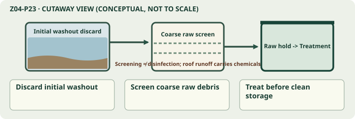

Z04-P23 · Water · Adapted historical material
Separate first-flush debris and roof runoff from raw storage
Reduce coarse dust, pollen and droppings entering raw rain storage without mistaking screening for purification.
When it applies · Temporary tarp catchment or emergency roof-downspout collection when no safer potable source is available.
Equipment · Clean catchment surface, coarse debris screen, discard bucket and separate raw-water storage vessel.

Actions
- Allow initial rainfall to wash surface dust and loose grit off the catchment onto the ground before diverting flow into the raw vessel.[W30, W03]
- Place a clean mesh or cloth screen over the raw vessel mouth to exclude leaves and insects while keeping screen surfaces on the raw side.[W30, W08, ED]
- Treat roof-collected rain as high-risk raw water because roofing shingles, solder, gutters and bird waste can introduce both pathogens and chemicals.[W03, W01, W30]
Failure recognition · Assuming first-flush diversion or a leaf screen produces drinkable rainwater without microbial treatment or chemical screening.[W03, W30, W08]
Verify · Confirm initial washout was discarded, raw storage stays covered and a validated microbial treatment is ready before drinking.[W30, W02, W04, ED]
Stop or change course · Prefer commercial or verified potable water over roof runoff whenever available; reject runoff from treated, flaking or chemically contaminated roofs.[W03, W01]
Evidence and editorial notes
- W01 · CDC · How to Make Water Safe in an Emergency (2024-09-19)
- Section: Water with fuel or toxic chemicals in it · Conditions: Suspected fuel, toxic chemicals or radioactive contamination
Support: Use a different safe supply. Standard boiling and microbial disinfection do not make this water safe.
Limitations: Does not list contaminant-specific lab remediation; applies to emergency consumer decisions only. · Conflicting evidence: None across CDC/EPA emergency guidance.
Editorial note: Used as upstream hard-stop gate prior to any field treatment card. · Specialist reviewer: Drinking-water safety and public health
Primary source · checked 2026-11-24 - W02 · CDC · How to Make Water Safe in an Emergency (2024-09-19)
- Section: Boil > Steps for boiling water · Conditions: Microbiologically suspect water with acceptable chemical source; portable heat and safe vessel
Support: Clarify cloudy water first. Rolling boil for one minute; above 6,500 feet for three minutes. Cool and cover in sanitized containers.
Limitations: Does not remove dissolved metals, nitrates, fuel, or cyanotoxins. · Conflicting evidence: Older Track B B009 omitted the 6,500 ft threshold; CDC threshold governs.
Editorial note: Require explicit timer verification after rolling boil starts. · Specialist reviewer: Drinking-water safety and public health
Primary source · checked 2026-11-24
Current assessment · W2C-E047 (2026-11-28) · Open: agencies differ; a specialist decision is needed: CDC uses three minutes above 6,500 feet; EPA uses three minutes above 5,000 feet. Cards follow the CDC wording; the more conservative EPA threshold is recorded for decision. Limits: Not changed on cards in W2C-B07. - W03 · CDC · Collecting Rainwater and Your Health (current web edition)
- Section: Rainwater might not be safe for household use · Conditions: Collected rain, including apparently clean runoff
Support: Germs and chemicals can enter from air, roof, gutters or storage. Prefer safe drinking water for ingestion.
Limitations: Site-specific roof and atmospheric chemistry vary; no universal roof-wash formula assumed. · Conflicting evidence: None; aligns with CDC potable-first hierarchy.
Editorial note: Separates catchment from raw storage and microbial treatment. · Specialist reviewer: Drinking-water safety and environmental health
Primary source · checked 2026-11-24 - W04 · CDC · Water Treatment Options When Hiking, Camping, or Traveling (current web edition)
- Section: Water treatment methods > Filter and disinfect · Conditions: Untreated backcountry water; suitable devices and directions
Support: Filter capability varies. Filtering then disinfecting addresses gaps left by typical portable filters. Follow both manufacturers' directions.
Limitations: Effectiveness depends on pore rating, cartridge integrity, and manufacturer-verified test standards. · Conflicting evidence: None; consumer claims outside NSF/EPA standards are excluded.
Editorial note: Used to require multi-barrier pairing rather than relying on one filter alone. · Specialist reviewer: Drinking-water treatment specialist
Primary source · checked 2026-11-24 - W08 · CDC · How to Make Water Safe in an Emergency (2024-09-19)
- Section: Boil > Steps for boiling water > cloudy water · Conditions: Cloudy water with no identified chemical hazard
Support: Settling or cloth clarification only prepares water for treatment. Do not count it as disinfection.
Limitations: Removes coarse suspended solids only; dissolved toxins and microbes remain. · Conflicting evidence: Contradicts folklore claims that sand/cloth straining yields potable water; CDC governs.
Editorial note: Always depicted upstream of microbial treatment with an explicit barrier line. · Specialist reviewer: Drinking-water safety
Primary source · checked 2026-11-24 - W30 · CDC · Collecting Rainwater and Your Health (current web edition)
- Section: Collecting Rainwater > First-Flush, Debris, and Storage Hygiene · Conditions: Improvised or dedicated rainwater catchment systems
Support: Bird droppings, windblown dust, leaf tannins, and surface coatings enter initial runoff; isolate collection surfaces, screen coarse debris on the raw side, and treat before drinking.
Limitations: Even screened rain catchment remains raw water until validated microbial treatment is applied. · Conflicting evidence: None; prevents treating screened rain as potable.
Editorial note: Supports catchment geometry, leaf/branch runoff limits, and first-flush separation. · Specialist reviewer: Drinking-water safety and environmental health
Primary source · checked 2026-11-24
Current assessment · A04-W30 (2026-11-25) · Open: support partial or missing (A04): Supports raw-side control as risk reduction. First-flush separation and particle screening do not establish potability. Treatment and permitted end use require system and local review. Limits: Specialist review PENDING (Drinking-water safety and environmental health); publication HOLD. All release decisions pending.
Source lineage · B003 P02 and CDC rainwater guidance; new manuscript · Classification · Adapted historical material.